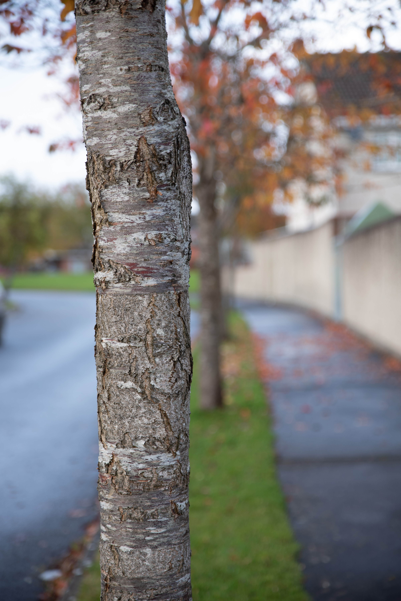
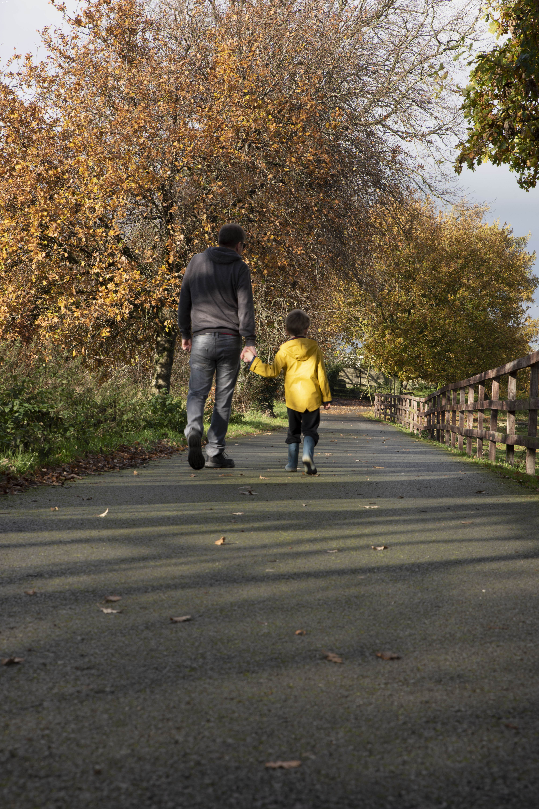
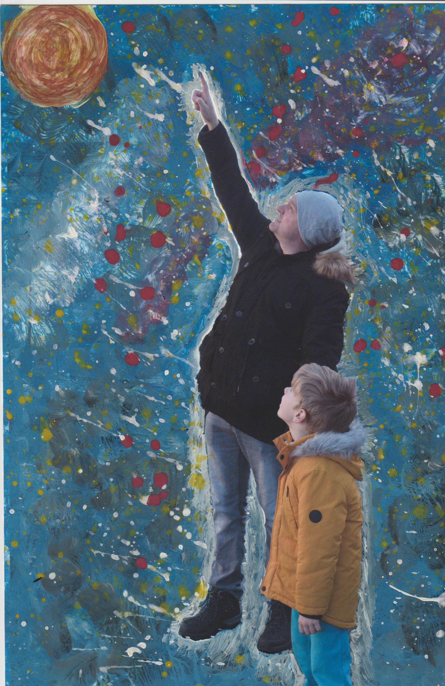

In the Digital Photography course I learned camera exposure settings, composition, white balance and about developing a photographic style. Here are some of my photographs from my first semester.





Link to the report for the "Fatherhood" Photo Essay
Link to my Photography blog